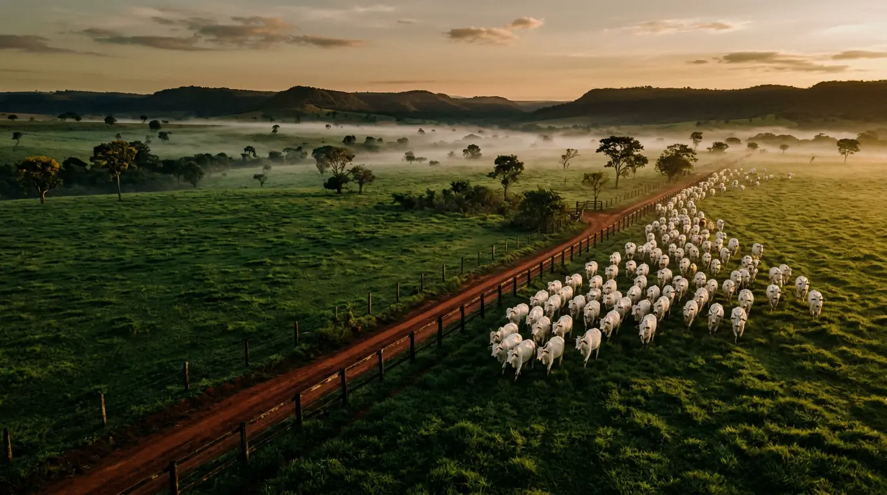
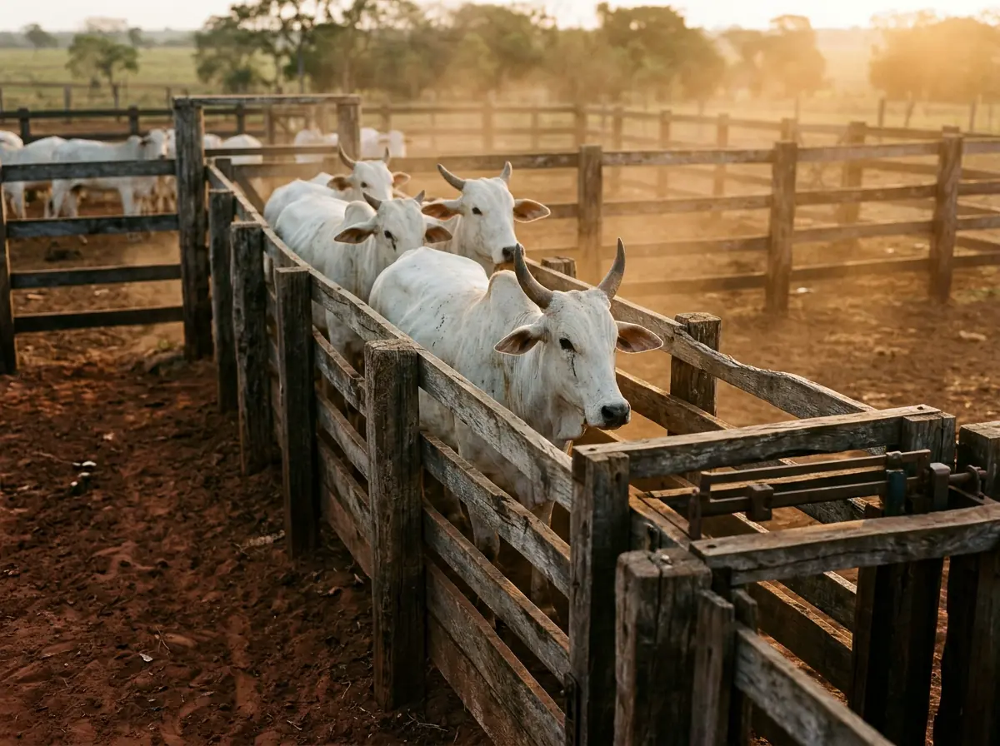
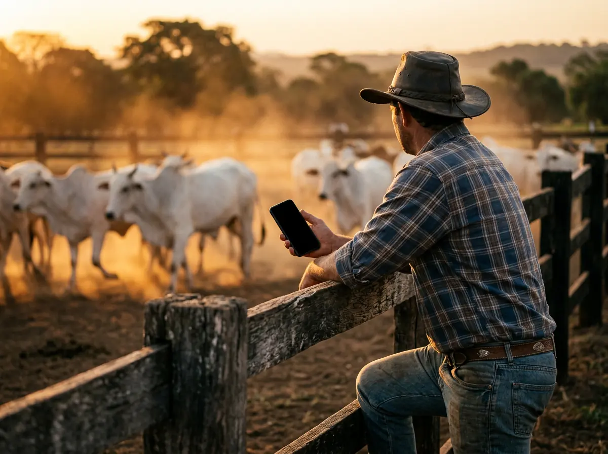
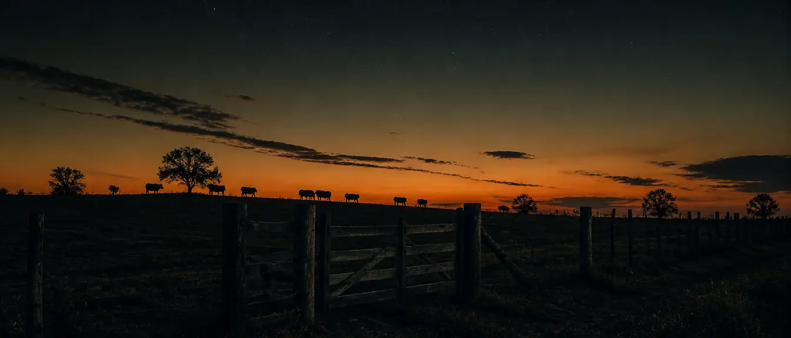

Controle de gado de corte por lote
Seu gado,lote por lote,quilo por quilo.
Lance a pesagem pelo celular, mesmo sem sinal. O Lote Certo calcula o ganho de peso, guarda a sanidade e monta a planilha Excel para você.
O problema
A pesagem foi feita. O número ficou onde?
No caderno, o dado existe, mas não está à mão na hora de decidir. E a conta do ganho de peso fica para depois, quando sobra tempo.

361 kg ou 351?Do jeito de hoje
última pesagem:
ganho = 49 ÷ 60 =
vacina: acho que foi em agosto
passar pro Excel no domingo !!!
Com o Lote Certo

No curral
Sem sinal. Sem problema.
Você lança a pesagem ali mesmo, na beira do tronco. O celular guarda tudo e envia sozinho quando a internet voltar.
A fazenda vista de cima
Toque num pasto. O número aparece.
Cada lote com suas cabeças, a última pesagem e o ganho por dia. É assim que o Lote Certo enxerga a sua fazenda.
O sistema
Quatro telas. O manejo inteiro.
Toque em cada uma para ver como fica no celular.
Experimente agora
Ponha um lote seu na balança.
Esta é a conta que o Lote Certo faz a cada pesagem. Troque os números pelos do seu gado.
Benefícios
O que muda na sua lida.
Funciona onde o sinal não chega
No curral quase nunca tem internet. Você lança tudo normalmente e o sistema envia sozinho quando o celular voltar a ter conexão.
Excel sem digitar
A planilha completa sai pronta, com cores, filtros e totais.
Sanidade sem achismo
Cada aplicação fica no histórico do lote.
A vida do lote em uma linha
Um toque no lote abre tudo o que aconteceu com ele, da chegada à venda.
Celular e computador
Abre no navegador, sem instalar nada pela loja. No celular, o ícone vai para a tela inicial e funciona como aplicativo.
O rebanho em um número
Cabeças ativas, lotes ativos e peso médio de todo o gado, sempre atualizados.
Como funciona
Da chegada do gado à venda do lote.
Cadastre o lote na entrada
Quantidade, sexo, idade, raça, peso médio e data. Leva menos de um minuto.
Lance pesagens e manejos
A cada passagem pelo curral, informe o peso médio e o que foi aplicado. Pode ser sem internet.
Acompanhe e dê a saída
Veja o ganho de cada lote, baixe a planilha quando precisar e registre a saída quando o lote for vendido.
Assinatura
Um plano só. O sistema inteiro.
Sem versão limitada e sem recurso travado. Quem assina usa tudo.
Lote Certo completo
Para quem vive do gado e quer o controle na mão.
O preço da assinatura aparece aqui.
Assinar agora- Lotes ativos sem limite
- Várias fazendas na mesma conta
- Entrada, saída e histórico de cada lote
- Pesagem com GMD automático
- Controle de sanidade com total aplicado
- Painel do rebanho
- Planilha Excel completa em um botão
- Funciona sem internet
- Celular e computador
- Acesso para sócio ou funcionário
Este botão ainda não leva a lugar nenhum. O link entra aqui quando a plataforma de compra for definida.
Dúvidas
Antes de decidir.
Funciona mesmo sem internet?
Sim. Depois do primeiro acesso, o sistema abre e aceita lançamentos sem conexão. Tudo fica guardado no aparelho e é enviado sozinho quando a internet voltar.
Preciso instalar algum aplicativo?
Não. O Lote Certo abre no navegador do celular ou do computador. No celular você pode adicionar o ícone à tela inicial e usar como um aplicativo.
Já uso Excel. Vou perder minha planilha?
Não. O sistema gera a planilha Excel completa sempre que você quiser, com todas as abas preenchidas. Você continua tendo o arquivo, só não precisa mais digitar nele.
O controle é por animal ou por lote?
Por lote. Você trabalha com a quantidade de cabeças e o peso médio do lote. O sistema não faz controle individual por brinco e não tem módulo financeiro.
Quem vê os dados da minha fazenda?
Só você e as pessoas que você autorizar. Cada conta enxerga apenas as próprias fazendas.
Como é feito o pagamento?
A assinatura é paga em uma página segura de pagamento, aberta ao tocar em Assinar. O acesso é liberado na sua conta depois da confirmação.
Posso cancelar? E os meus dados?
Pode cancelar quando quiser. Nos primeiros 7 dias você pode desistir e receber o valor de volta.

Na próxima pesagem,saia do curralcom o número na mão.
Assine, cadastre seus lotes e tenha o ganho de peso de cada um sempre à mão.